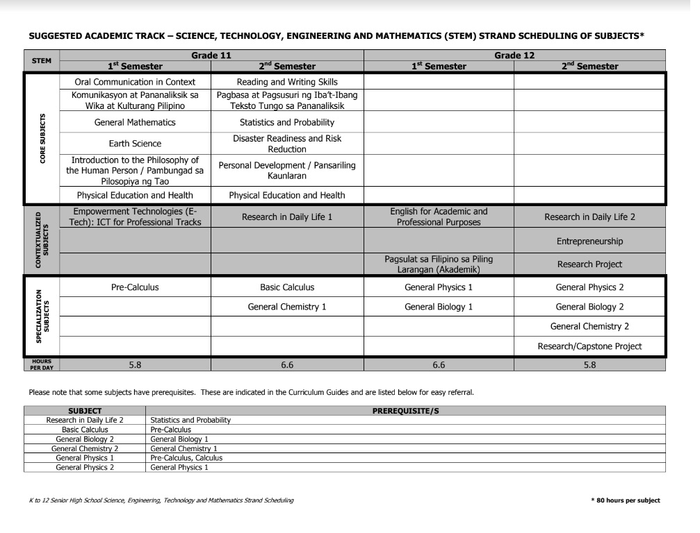
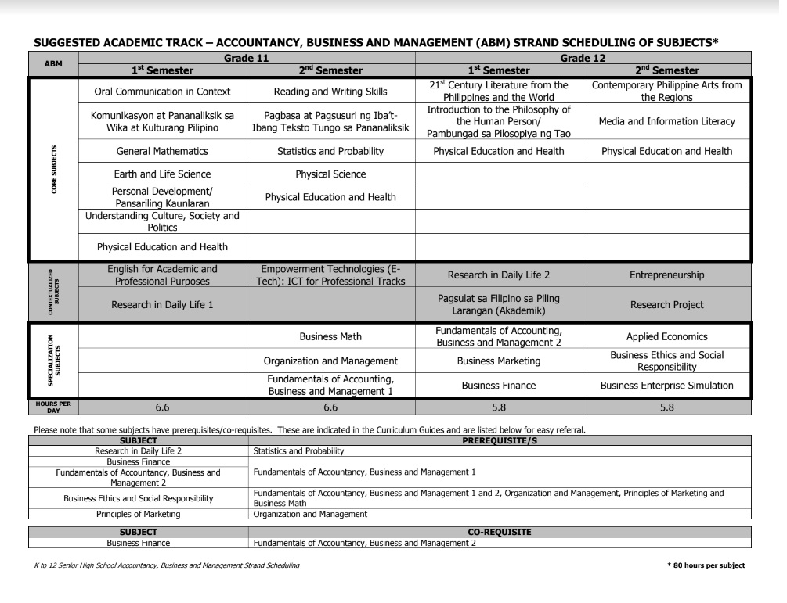

STEM (SCIENCE, TECHNOLOGY, ENGINEERING AND MATHEMMATICS
The difference of the STEM curriculum with the other strands and tracks is the focus on advanced concepts and topics. Under the track, you can become a pilot, an architect, an astrophysicist, a biologist, a chemist, an engineer, a dentist, a nutritionist, a nurse, a doctor, and a lot more. Those who are also interested in Marine Engineering should take this track.
Subjects
ABM (ACCOUNTANCY, BUSINESS, MANAGEMENT)
as well as each and every factor that revolves around those central fields.
The ABM strand can take you on a direct path to careers in accounting and management: sales management, human resources, marketing director, bookkeeper, project officer, accounting clerk, internal auditor, and many more.
Subjects
HUMMS (HUMANITIES AND SOCIAL SCIENCE STRAND)
In other words, you are ready to take on the world and talk to a lot of people.
This is for those who are considering taking up journalism, communication arts, liberal arts, education, and other social science-related courses in college.
If you take this strand, you could be looking forward to becoming a teacher, a psychologist, a lawyer, a writer, a social worker, or a reporter someday. This strand focuses on improving your communication skills. Oh! And priesthood is a choice in here too!
Subjects